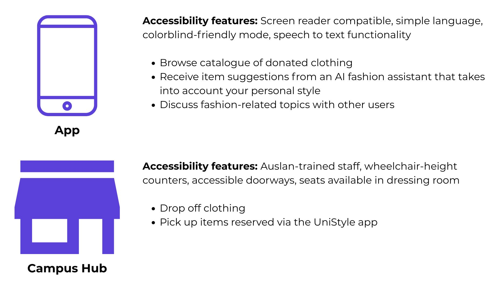
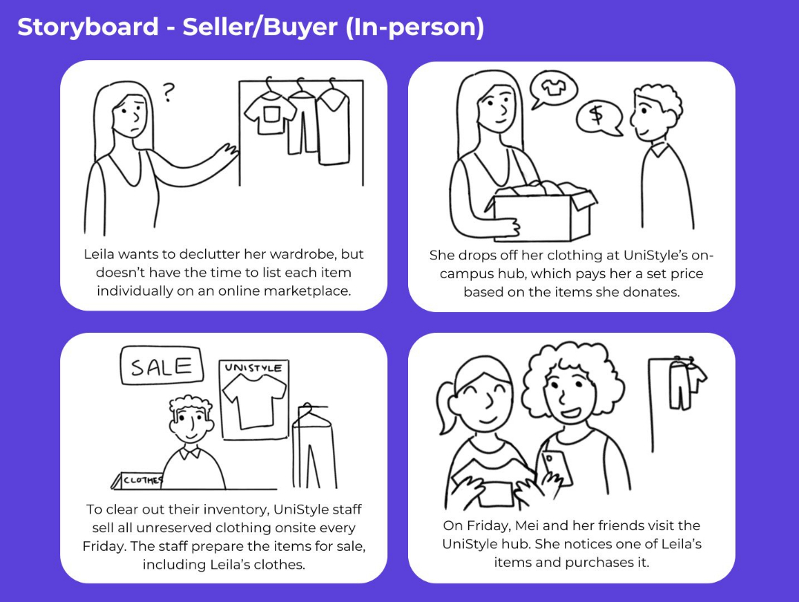
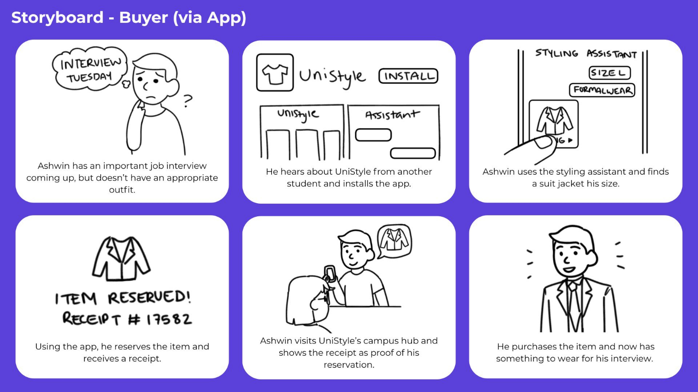
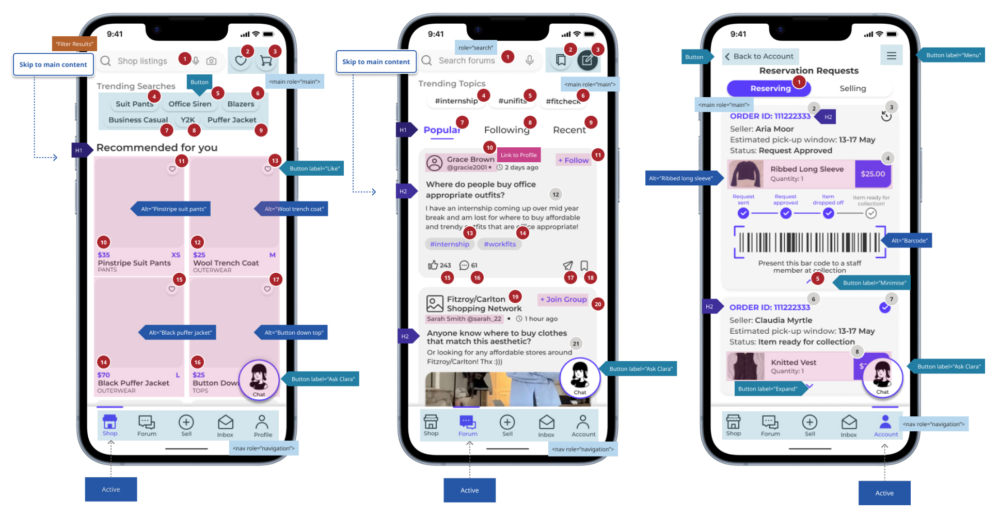
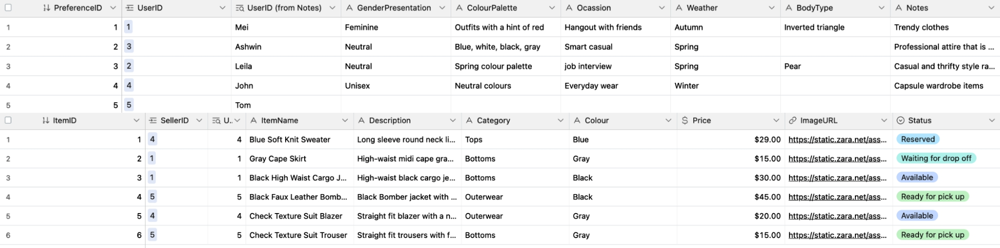

UniStyle
UniStyle is an accessible multi-touchpoint service that provides a convenient and affordable way for students to find affordable clothing, become more confident, and foster social skills. It was developed in collaboration with other UX designers.
Timeframe: 9 weeks
Tools used: Figma, Adobe Illustrator, Voiceflow, Airtable
Skills: UI/UX Design, Service Design, Conversation Design, Accessibility Design
Situation: As students begin living independently and joining the workforce, they require access to affordable clothing and a way to build social and professional confidence. This particularly impacts students with disabilities, who face additional barriers to employment.
Concept: UniStyle helps students with their social confidence and wardrobe at the same time, and is designed with accessibility in mind. It includes an online forum dedicated to styling and fashion advice, a clothing sales platform with both digital and in-person touchpoints, and an AI conversational agent that serves as a styling assistant.
User Journeys
Storyboard illustrating how our persona Leila uses UniStyle to donate unused clothing and improve her social confidence.

Storyboard illustrating how our persona Ashwin uses UniStyle to obtain secondhand clothing suitable for an upcoming job interview.
To test the in-person component of our service, we used building blocks to create a physical model of the on-campus hub and conducted a walkthrough of the service, with participants playing the role of potential users. Participants were briefed on our user personas and disabilities they had in order to test the service's accessibility. These walkthroughs provided us with valuable insights on how to operate the service. We initially used a points-based purchasing system to limit the amount of clothing students could receive in a week. However, after receiving feedback, we changed to a simpler currency-based system that would provide more of an incentive to donate clothing to the service.
Prototyping
The A11y toolkit was used to annotate accessibility features for our app prototypes.
Low-fidelity wireframe of the UniStyle app with accessibility features annotated.
Initially, we received user feedback that the site navigation was unintuitive. To address this, several sections of the website were renamed, such as the "Community" section being changed to "Forum" to align with external mental models. The layout was also optimised for mobile navigation.
Conversational Design
We used Voiceflow to create an AI-powered conversational agent for our service. It was designed to act as a "styling assistant" for students, capable of generating a personalised lookbook and recommending items based on user preferences. We conducted a survey to determine what factors users would value when finding clothing that suits their needs (such as gender presentation and colour). The survey also asked about participant expectations when interacting with conversational agents. Overall, respondents preferred conversational agents that provided instant and accurate responses that eliminated the need for human interaction.
A sample user flow for the conversational agent.
Connecting the conversational agent to an Airtable database via API calls allowed us to store user preferences and quickly search for suitable clothing.
